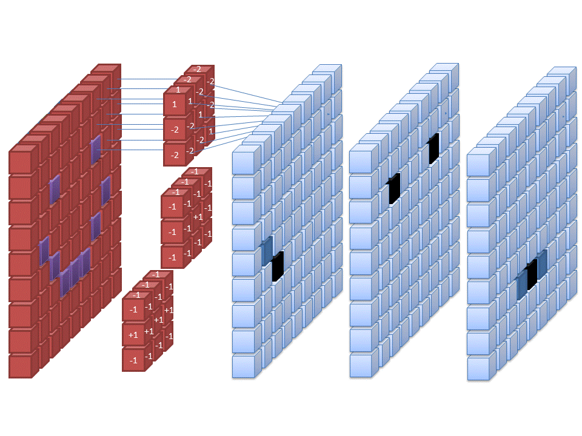
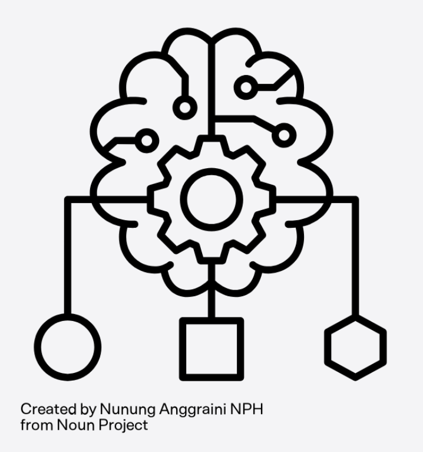
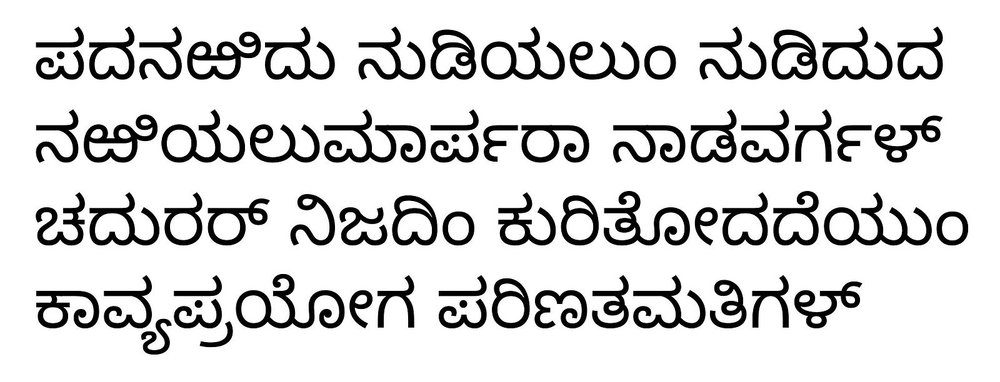

June, 2024
Engineered a Convolutional Neural Network (CNN)
model with TensorFlow and Keras to accurately
distinguish between adult and youth faces.
Built and trained five CNN models on a dataset of
14,635 images, rigorously evaluating them using
binary-crossentropy loss, accuracy, and F1 scores.
Achieved a validation accuracy of 0.72 and
a validation loss of 0.6, demonstrating strong
proficiency in advanced machine learning techniques
and model optimization.


In partnership with Prab Jaswal, produced a Multiple Linear Regression Model,
using their coefficients so that we could understand
(in order of priority) which pollutants to prioritize removing to maximize
bee colony numbers across the US.
We tried two different models: Multiple Linear Regression and Random Forest.
Using R2 and RMSE to evaluate our models.
Additionally, we examined the LINEM assumptions that are made when making linear regression inferential models.
.

Utilized powerful NLP tools such as CountVectorizer and
TfidfVectorizer, combined with Pipelines and GridSearchCV,
to develop effective predictive and inferential models.
Implemented CountVectorizer with MultinomialNB and TfidfVectorizer
with LogisticRegression, demonstrating robust performance in
predicting the source of Reddit posts. Achieved high metrics
across both models, with CountVectorizer + MultinomialNB achieving
a specificity of 0.889, recall of 0.975, precision of 0.958,
and an F1 score of 0.966. TfidfVectorizer + LogisticRegression
achieved a specificity of 0.834, recall of 0.992, precision of
0.939, and an F1 score of 0.965.

During the Hackathon, we worked closely with Holly Heath to
develop several Convolutional Neural Networks (CNNs) to
classify images from the Dig-MNIST dataset.
We meticulously designed and evaluated the architecture,
training process, and performance of six distinct
CNN models to determine the most effective approach
based on accuracy and loss metrics. Our efforts
culminated in the development of CNN5, which featured two
hidden layers and achieved the highest validation accuracy
of 0.9473, highlighting the project's success.
Despite its success, we identified areas for improvement,
such as reducing overfitting, showcasing our commitment to
continuous refinement and optimization in data science.
In collaboration with Holly Heath, we developed an effective predictive model using
natural language processing (NLP) techniques
to analyze drug reviews. Our goal was to classify
reviews based on their ratings by leveraging machine
learning algorithms to provide accurate predictions and insights.
Our NLP model demonstrated strong performance with a training
set accuracy of 93.64% and a testing set accuracy of 76.63%.
Future work includes refining feature selection and
exploring more sophisticated NLP techniques to improve
model generalization and accuracy.